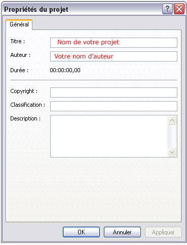

Il peut arriver dans la vie de l'étudiant banal et commun (ce qui doit être le cas de quelques Zér0s, je pense ;) ) d'avoir à créer de petits montages vidéos à l'occasion, je ne sais pas moi, d'un TPE à rendre (Travaux Personnels Encadrés, pour les ignares ^^ ) ou de toute autre présentation, bref, de créer un petit montage vidéo pour mieux illustrer ses propos.
Eh bien tant mieux : je vais vous proposer de réaliser facilement et gratuitement un petit montage vidéo personnel. Notez que ce n'est pas bien dur, et que je me contenterais de vous donner la marche à suivre ainsi que quelques conseils pour adapter votre montage à la situation.
Commençons par vérifier si vous possédez les bons outils. Normalement, le logiciel Windows Movie Maker est fourni gratuitement avec le système d'exploitation Windows XP (en édition professionnelle ou familiale, peu importe). Si vous possédez cet OS, alors rendez-vous dans le Menu Démarrer, puis sélectionnez Tous les Programmes pour enfin cliquer sur le raccourci Windows Movie Maker (illustré par une pellicule de film en couleur). Normalement, l'interface principale devrait vous afficher les éléments principaux qui constituent ce logiciel. Vous trouverez ainsi les différents éléments qui composent le logiciel :
l'interface d'acquisition du logiciel ;
la bibliothèque actuellement sélectionnée ;
la visionneuse ;
la trame de temps.
Commencez par modifier, si ce n'est pas déjà fait, la trame de temps pour ne pas l'avoir sous la forme de séquence (pour ce faire, sélectionnez l'option adéquate en cliquant sur Affiche la chronologie).
Ensuite, vous pouvez éditer les propriétés par défaut, pour ne pas avoir à chaque fois à remettre votre pseudo de réalisateur, votre copyright et tout le reste (à part le titre, qui change à chaque montage, bien entendu). Pour ce faire, allez dans Fichier / Propriétés, puis rentrez les informations correspondantes.

Pourquoi faire tout ça ?
Eh bien, les fichiers vidéos que nous récupèrerons à la fin sont au format *.wmv (= Windows Media Video, je crois), ils sont donc lisibles avec le logiciel Windows Media Player (ce qui est assez logique, ma foi). Ainsi, pendant la lecture de votre (futur) clip vidéo, les informations défileront, et ne peuvent être modifiées. Intéressant donc, surtout pour le copyright. Mais assez perdu de temps, commençons les choses sérieuses !
Comme on le dit souvent : « c'est en forgeant que l'on devient forgeron », c'est donc en montant des clips vidéos que l'on devient un vrai vidéo-maker ! Commençons par créer un nouveau projet. Faites Fichier / Nouveau Projet , puis faites Enregistrer le projet sous... et nommez votre fichier selon votre humeur ;) .
Il s'agit d'un fichier léger qui indique au logiciel comment se trouvent organisées les parties de votre montage, ainsi que le lieu où sont stockés les éléments qui le constituent. Dans mon cas, je l'ai nommé essai, et je l'ai enregistré dans Mes Documents.
Maintenant, que faire ? Eh bien, il faut importer (c?est-à-dire indiquer au logiciel où se trouvent les fichiers) les éléments qui constitueront votre montage. Sur le panel de gauche, vous pouvez importer de la musique, des images, de la vidéo, ou bien carrément acquérir à partir d'un périphérique (par exemple, une Webcam si vous en possédez une ;) ). Personnellement, j'ai commencé avec des images, ce qui est souvent bien pratique. Choisissez deux trois photos que vous voulez utiliser (ne craignez rien pour vos fichiers, ils ne sont pas modifiés par le logiciel), et importez-les dans le logiciel (faites Importer des photos, puis sélectionnez les images choisies).
Les photos sont maintenant dans la bibliothèque. Si vous le désirez, vous pouvez changez de bibliothèque en en choisissant une autre dans la liste déroulante. Mais elles ne sont pas dans le montage ! Faites un glisser / déplacer pour les mettre sur la Timeline (le plan de montage) en bas. Mettez-les à la suite. Faites un test en appuyant sur le bouton "Lecture" de la visionneuse. Ça y est : vous avez fait votre premier montage vidéo (ou du moins en avez-vous un aperçu).
Qu'est-ce que la Timeline ? Il s'agit de la barre de montage située en bas du logiciel. C'est cette barre qui est l'élément principal du logiciel, en vous permettant de gérer l'apparition des divers éléments.
De quoi est composée la Timeline ? D'une partie vidéo qui accueillera vos séquences (les clips vidéos), d'une partie Transition qui vous montrera les différentes transitions entre les clips, d'une partie Audio qui est en fait le son du clip vidéo s'il en est pourvu, d'une partie Audio / Musique qui contiendra la musique de fond, et la Superposition du titre, mais nous verrons cela plus tard o_O .
Peaufinons tout ça. Qu'est-ce qui fait que votre montage est moche (ne dites pas le contraire, c'est fait exprès :p ) par rapport aux clips professionnels ? Il manque, en vrac : une musique de fond, les transitions (comment passer d'une image à une autre) et les titres de votre clip. Procédons par étape.
Pour incorporer la musique, importez-la (faites Importer le son ou la musique, sélectionnez un de vos fichiers sons). Le fichier se rajoute dans la bibliothèque, et vous pouvez l'ajouter à la Timeline, mais cette fois-ci dans la catégorie Audio / Musique. Refaites le test de la visionneuse : vos photos sont maintenant en musique :D !
Ajoutons des transitions entre vos fichiers images. Dans la barre d'outils, allez à Outils / Transitions vidéos pour ne plus avoir les bibliothèques, mais les transitions.
Qu'est-ce qu'une transition ?
C'est le petit effet qui sépare deux clips (des images, des vidéos...) pour le rendre plus esthétique. Vous constaterez qu'il y a un bon choix de transitions. Sélectionnez-en une, glissez là sur le montage dans l'espace séparant deux clips. Voilà, vous venez de rajouter une transition :o !
Avant de terminer notre montage final, il nous faut y inclure des Titres. Pour ce faire, allez dans Outils / Titres et génériques. Le logiciel vous propose 5 choix, mais au final il n'y a que deux différences.
Soit vous choisissez de faire un titre à l'image d'un clip (c'est-à-dire qui se comporte comme vos images), soit vous créez un titre superposable. C'est ce qui nous intéresse ici. Dans ce cas, sélectionnez l'option Ajoutez un titre au clip sélectionné dans la chronologie. Vous tapez votre texte, vous acceptez le titre et paf ! Ça a fait des chocapics ! Euh non, je m'égare là. Un nouvel objet s'est rajouté dans votre Timeline , et vous constatez que c'est votre titre. Vous pouvez ainsi le superposer à vos clips déjà présents, ce qui est bien mieux et beaucoup plus joli. Innovez un peu, et voilà, notre projet est fini. :)
Eh bien elle n'est pas encore encodée, c'est tout. Autrement dit, vous avez indiqué au projet comment organiser les clips, maintenant, il faut lui demander de créer un fichier vidéo.
Pour cela, sélectionnez Enregistrer sur mon ordinateur dans le panel de droite, indiquez la taille (laissez les options par défaut, c'est le format le mieux adapté à la lecture sur votre ordinateur) et choisissez un nom de fichier ainsi que l'emplacement de ce fichier. Maintenant, attendez ! L'opération peut prendre plus ou moins de temps selon la taille du projet. Allez boire un café à la machine au coin :-° , sirotez-le et revenez sur votre PC.
Là, ô miracle, notre fichier vidéo est nickel, il se lance avec Windows Media Player, contient votre copyright, votre nom d'auteur, etc. Et il ne dépend pas de l'emplacement des éléments qui le composent. C'est vraiment un fichier très indépendant, tellement indépendant que vous ne pouvez pas l'ouvrir avec Windows Movie Maker pour le modifier. C'est pourquoi il est nécessaire de toujours garder le projet original bien au chaud sur son Disque dur.
Désolé, je n'ai pas trouvé de meilleur titre pour cette partie. En fait, je vais vous donner, comme son nom l'indique, quelques trucs et astuces pour optimiser la création de montages vidéos, pour les rendre plus esthétiques, entre autres. Je pars ainsi du principe que vous savez parfaitement utiliser le logiciel pour créer un petit clip. Si ce n'est pas le cas, remontez un peu plus haut !
Comme vous l'avez remarqué, vous pouvez inclure un fond sonore. C'est pratique, mais vous voudriez peut-être en mettre plusieurs à la suite, et ne pas les laissez tourner jusqu'à la fin ? Commencez par raccourcir votre fichier de son sur la Timeline , puis incluez-en un deuxième à la suite. Problème = le son casse, et vous passez brutalement d'une musique à l'autre. Pour résoudre ce problème, Windows Movie Maker possède une option très pratique. Faites un clic droit sur votre fichier de son, et sélectionnez Disparition en fondu dans le menu qui s'affiche. Faites de même pour le fichier de son suivant, sélectionnez Apparition en fondu. Le logiciel va ainsi pouvoir, comme pour les transitions, passer avec nuance d'une musique à l'autre. C'est très pratique car cela évite de casser le rythme.
Comme vous l'avez vu, Windows Movie Maker inclut les images en leur donnant une durée prédéfinie qui est de 5 sec. C'est souvent trop lent pour pouvoir inclure un titre (le spectateur n'a pas le temps de lire le titre & d'admirer la photo). Vous pouvez décider de changer la valeur par défaut en allant dans Options / Préférences. En ce qui me concerne, j'ai mis 7 sec. : je trouve que c'est un bon compromis de temps entre bon enchaînement des clips et aperçu globale de la photographie.
Vous remarquerez que, en plus des boutons de lecture, vous disposez dans la visionneuse de deux autres options. Commençons par nous intéresser à l'option Prendre une photo.
Vous trouverez cette option en-bas de la visionneuse, l'icône représentant un appareil photo...
Cette option est vraiment très utile. Elle consiste à prendre une photo de ce que vous êtes actuellement en train de visionner. Il y a de multiples exemples d'utilisation de cette option, mais en voici une qui ajoutera de la classe à votre montage : prenez un clip vidéo (pas une image), puis faites cette option à la fin de votre clip vidéo. Faites une photo, enregistrez-la, puis incluez-la à la suite de votre montage. Vous obtenez ainsi une pause sur la fin de votre montage, ce qui est pratique pour un générique, par exemple.
Oui, mais si je veux faire un arrêt sur image au milieu de mon clip vidéo, puis reprendre la lecture normale de ma vidéo ?
Je m'y attendais à celle-là. C'est ici que la deuxième option de la visionneuse est utile. Elle consiste à fractionner le clip que vous êtes en train de lire à l'instant où vous vous trouvez. Pour réaliser un arrêt sur image impeccable, voici la marche à suivre.
Lisez votre clip, puis faites une pause à l'instant où vous voulez faire l'arrêt.
Ajustez avec les boutons "Image précédente / Image suivante".
Prenez une photo et enregistrez-la.
Fractionnez le clip en deux.
Maintenant, il ne vous reste plus qu'à inclure votre photo entre les deux parties du clip pour obtenir un résultat nec plus ultra :lol: .
Au terme de ce tutoriel, j'espère vous avoir initié au plaisir du montage vidéo.
C'est pour cela que je vous invite maintenant à lire le tutoriel de jipe47 intitulé l'art du movie-making avec Vegas. Ce logiciel, dont la version destinée au grand public est vendue aux alentours de cent euros, est l'idéal pour continuer à progresser dans le movie-making. En fin de compte, on retiendra l'équation suivante :
Windows Movie Maker = dépannage ou initiation au montage vidéo Sony Vegas, Adobe Première, etc. = permettant plus de choses, mais il faut en maîtriser l'interface... Si vous parvenez à un résultat ma foi fort correct, et que vous désirez le faire partager à d'autres, vous connaissez tous (je pense) les sites de partage de vidéo comme DailyMotion (soyons français) ou YouTube. Sans être chauvin, je vous conseille le premier, surtout si vous réalisez quelque chose de vraiment original, grâce au dépôt de votre vidéo sur la licence Créative Commons.
Cordialement, Norrecix
Tous mes remerciements et toutes mes excuses (pour le retard) au zCorrecteur ptipilou qui a corrigé mes fautes dans ce mini-tuto.